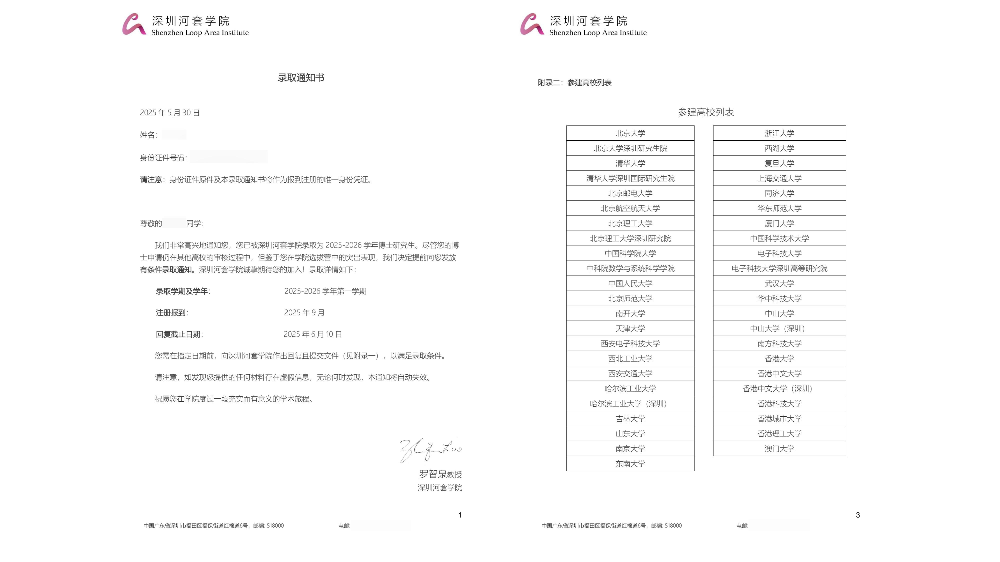

SLAI Application
Application and Exam Preparation
I received the application notice from the department and my supervisor at the end of February. Shortly after that, the Shenzhen Loop Area Institute (SLAI) gave a presentation on the first-year student application process. The talk covered the examination details, program benefits, and overall objectives.
- SLAI is established to develop AI-related talented people in various areas.
- SLAI could afford bunches of GPU which means they have enough computing power
- SLAI is fully taught in English
- In order to apply it, you need to prepare for the exam which is about advanced mathmatics, linear algebra, statistics and coding.
I started preparing it since March. Obviously, it did not have a clear exam outline in the first year, so I watched the admissions talk of Beijing Zhongguancun Academy. The point is to understand one book called 西瓜书 in Chinese. Here I put the book cover below.

It needs to be mentioned that your understanding about the formula derivation is one of the important aspect. The point is let you be familar with the formula principle that you may not no longer remember. For exmaple, the matrix calculation, the integration formula, and etc. Personally, I recommend on book called pumpkin-book. It it an open accessed book which is published in Github by Datawhale. Here I give the link: https://github.com/datawhalechina/pumpkin-book
Also, I took part in a course named Machine Learning. The course is basically about the principle of each algorithms, including machine learning, deep learning, and optimization parts. Here I put the content below.
- Model evaluation and optimization
- Model selection
- Supervised learning
- Unsupervised learning
- SVM and clustering
- Deep learning
- CNN
- RNN
- Reinforcement learning
This course spans a total of 12 weeks, which is not quite enough to fully achieve our goal. However, it has helped me grasp some of the most important concepts by providing targeted questions.
- Maximum likelihood method
- Distribution knowledge
- Probability density function
SLAI Selection Camp
The selection camp was organized from 14th to 17th in April. The specific events have been listed below.
- 14th: Student registration
- 15th: Examination
- 16th: Research proposal exam
- 17th: Interview
Specifically, the examination lasts for three hours without any breaks. Before entering the room, you are only allowed to bring your identification card (ID) and pens—everything else is prohibited. If any smart devices, such as an Apple Watch or mobile phone, are found during the exam, your qualification will be immediately revoked.
On the second day, the exam will assess your ability to write a research proposal. In the morning, three speakers will each deliver a lecture on a different topic. Note-taking materials, including pens, are not permitted—your memory is the only tool you can rely on. After the lectures, all students will be brought into a single room. You will then be given a question related to one of the lectures, and you must choose one topic and respond to the specific prompt within a limited time (approximately two hours).
The final day is the most important part of the process. All students were divided into morning and afternoon sessions, but the specific order was not disclosed. You simply wait for your name to be called. As with previous stages, electronic devices were strictly prohibited. You were only allowed to bring your CV and an information collection form into the room. Students were first led to the library, where they waited for about 20 minutes. Then, each student was taken to the interview room, where the session began almost immediately. The interview consisted of two parts. The first part was a three-minute self-introduction in English, followed by an English Q&A session. The second part was a more general question-and-answer session with two interviewers. You were expected to respond to questions on the spot, and the topics may relate to any content in your CV.
From my personal experience, the interviewers were particularly interested in my personal background, even more than my academic achievements. I also heard about some challenging questions, such as: “What would you do if your opinion differs from your supervisor’s?” or “How would you handle a team member who is not contributing to a group project?” The entire interview lasts about 20 minutes, with a clock displayed on the whiteboard to keep track of time.
Personal thoughts
The whole process was both intense and unforgettable. I spent two months preparing for the exam, during which my research progress came to a complete halt. Despite the preparation, I felt mentally blank when facing the written test. I have to admit, the exam was extremely difficult and seemed more favorable to students with a strong background in mathematics. The lectures on the second day also felt somewhat disconnected from my field. The first topic focused on catalysts, the second on computer vision, and the third on ethical principles in artificial intelligence—none of which aligned closely with my research interests. Moreover, the waiting time before the interview was mentally exhausting. Despite all the challenges, I still believe the experience was valuable and worth going through.
Outcome
Hard work paid off, and I was fortunate to receive the offer. I hope that any student reading this note will also achieve their goals and secure the opportunity they are striving for.
Moments